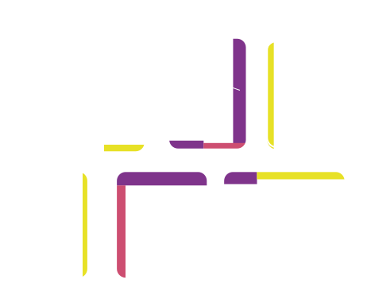
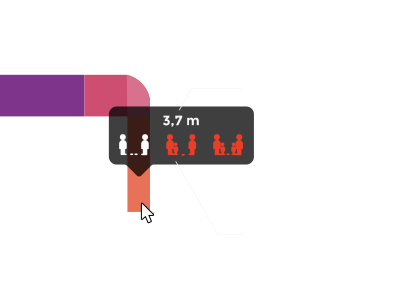

Distanciamiento peatonal: máxima distancia posible de cruce entre peatones en las aceras y calles peatonales, calculado a partir de los datos abiertos del Ayuntamiento de Madrid.
Partiendo de la distancia interpersonal recomendada de al menos 2 metros y teniendo en cuenta que para estudios urbanísticos, se toma un círculo de 0.5m de radio como el espacio ocupado por un peatón y que se considera una distancia de seguridad de 0.25m respecto a fachadas, bordillos y otros elementos constructivos, el ancho mínimo de senda peatonal que garantiza dicha distancia interpersonal recomendada, asciende a 3.5m.
En el caso de de ir acompañado de un@ niñ@, este ancho mínimo se ve incrementado hasta los 4m.
Que ascendería hasta los 4.5m en el caso de cruzarnos con otro tandem adulto-niñ@.
El calculador de rutas A → B te recomienda las vías por las que ir andando del punto A al punto B, como una referencia sobre la cual elegir la acera cumpla con el distanciamiento recomendado.
Al mover el cursor sobre tramos peatonales, o tocar en el móvil, se muestra el ancho de la zona peatonal y si este permite un cruce entre peatones cumpliendo las recomendaciones.
Siendo los indicadores de posibilidad de cumplimiento de la distancia recomendada en ese tramo para el caso de cruce con otro(s) peatones tal que (en blanco si se puede y en rojo si no):
Este desarrollo se ha hecho con mucho ♥ por el equipo de inspide desde nuestras respectivas casas en Abril de 2020. El código de esta apicación está disponible con licencia MIT en este repositorio de GitHub.